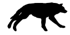

MoonLight PackCheck this page every time you are on, especially at the
end of
the wet season. Don't try to hunt or battle a lot if
you are sick
or injured. The status window will look like this:
Name - (status) fine/injured/sick
Krio - fine
Silver Ebony - fine
Diablos - fine
Silence - fine
Delta - fine